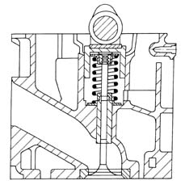

DESCRIPTION OF COMPONENTS
- Path
- Descriptions > 10 ENGINE > 1016 CYLINDER HEAD(S) > 1016E CYLINDER HEAD/S - VARIOUS OPERATIONS > DESCRIPTION OF COMPONENTS
- Kind
- system description
- Applies to
- engines: 2.4 JTD 10V; all production periods
- Interactive page
- https://sloeber94.github.io/elrnDB-lThss/en/#/609183
Applies to: engines: 2.4 JTD 10V; all production periods
CYLINDER HEAD
Specifications
Function
The cylinder head is a structural part of the engine that contains and supports timing system components.
Type
The cylinder head is one-piece in aluminium alloy and silicone.
The two valves per cylinder, which are parallel and vertical, are fitted in their own valve guides and controlled by a single camshaft whose cams act on mechanical tappets.
The valve guides are press-fitted in their seats on the cylinder head with interference. The inner bore is ground to size after fitting using a special reamer.
Unlike cylinder heads with prechamber, the entire combustion process takes place in the combustion chamber on the piston.
The gasket between cylinder head and crankcase is aramidic fibre and the head does not require retightening throughout the engine's lifetime.
